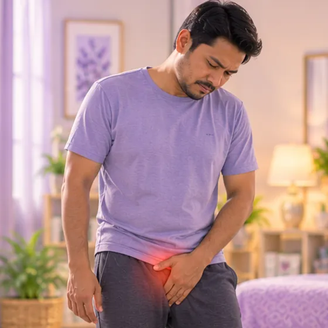

Epididimitis
Keradangan pada tiub berlingkar di belakang testis yang menyimpan sperma
Apa itu
Epididimis, iaitu tiub kecil berlingkar di belakang setiap testis, menjadi meradang, selalunya kerana jangkitan. Ia boleh menyebabkan sakit dan bengkak di satu sebelah.
- Belakang testis
- Lelaki semua peringkat umur
- Kawasan testis sakit, bengkak
- Jumpa doktor
- Doktor keluarga atau pakar urologi (doktor saluran kencing dan kesihatan lelaki)
- Biasa pada
- Lelaki semua umur; lelaki muda yang aktif seksual dan lelaki tua yang ada masalah kencing
- Berjangkit
- Sesetengah jenis boleh, jika puncanya jangkitan yang merebak melalui hubungan seks
- Perjalanan
- Biasanya baik dalam beberapa minggu dengan rawatan doktor; bengkak mungkin berlarutan
Tanda biasa

Pedih semasa kencingDisuria 
DemamDemam 
Sakit atau bonjolan di pangkal pahaSakit inguinal
Tanda-tanda lain
- Sakit dan bengkak pada skrotum, biasanya di satu sebelah, selalunya bertambah secara beransur-ansur
- Kawasan itu sakit apabila disentuh, terasa panas atau berat, dan kulit mungkin kemerahan
Mengapa ia berlaku

Prostat membesarPembesaran prostat
Punca lain
- Kuman dari saluran kencing, pundi kencing atau prostat yang merebak ke epididimis
- Jangkitan seksual seperti klamidia atau gonorea, kebanyakannya pada lelaki yang lebih muda
- Kateter kencing, atau ujian atau pembedahan baru-baru ini pada pundi kencing atau saluran kencing
- Kadangkala tiada kuman ditemui dan puncanya tidak jelas
Jumpa doktor dahulu jika
- Sakit teruk tiba-tiba pada testis, dengan atau tanpa muntah: ke hospital segera (mungkin terpuntir)
- Demam dengan menggigil teruk, keliru atau rasa nak pitam: ke hospital segera
- Tidak boleh kencing, atau hanya beberapa titik keluar: ke hospital segera
- Skrotum panas dan merah dengan bengkak yang cepat bertambah teruk
- Sakit atau bengkak yang tidak beransur baik selepas beberapa hari mengambil ubat daripada doktor
- Ketulan keras pada testis itu sendiri, atau bengkak yang tidak surut
Jika mana-mana berkenaan, sila jumpa doktor sebelum sesi.
Halaman ini ialah maklumat am. Sila terus mengambil ubat biasa anda dan terus berjumpa doktor.
Teruskan mengambil ubat biasa anda dan terus berjumpa doktor. Sesi kami ialah sokongan lembut dan tidak menggantikan rawatan perubatan.
Menjaga diri

Elak mengangkat beratElak tegangan 
Tanya ahli farmasiNasihat ahli farmasi
Lebih banyak cara menjaga diri
- Jumpa doktor untuk mencari puncanya, dan ambil sebarang ubat tepat seperti arahan doktor
- Pakai seluar dalam yang ketat dan menyokong, dan lapik skrotum dengan tuala yang digulung ketika berbaring
- Jika puncanya jangkitan seksual, elakkan seks sehingga doktor kata selamat, dan beritahu pasangan anda
Beritahu ahli terapi anda
- Demam atau jangkitan aktif
- Kulit luka, merah atau sakit
- Diabetes atau deria kulit berkurang
- Perentak jantung atau implan logam
Ahli terapi anda akan menyemaknya bersama anda sebelum bermula.
Keadaan berkaitan
- Tuberkulosis epididimis (TB)
- Vesikel seminal meradang (vesikulitis)
- Varikokel
- Air mani tidak mencair
- Epididimitis akut (radang saluran di belakang testis)
- Sperma berbentuk tidak normal (teratozoospermia)
- Jangkitan prostat akut (prostatitis bakteria)
- Prostatitis kronik bukan bakteria
- Tiada haid (amenorea)
- Sukar hamil (ketidaksuburan)
- Gejala kerengsaan pundi kencing
- PCOS (sindrom ovari polisistik)
Rujukan: General information based on public health sources such as Mayo Clinic, NHS, Cleveland Clinic and NCBI StatPearls.
Halaman dikemas kini: 2026-10-31